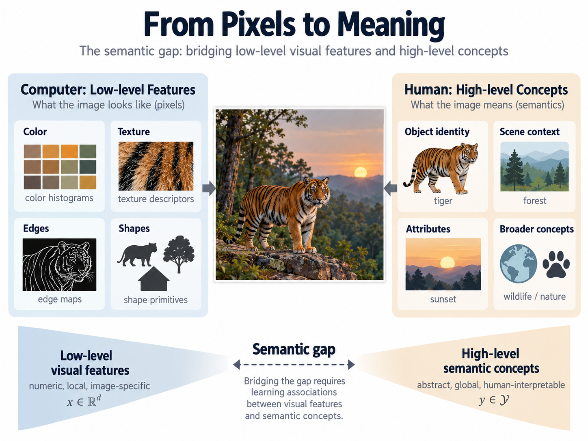
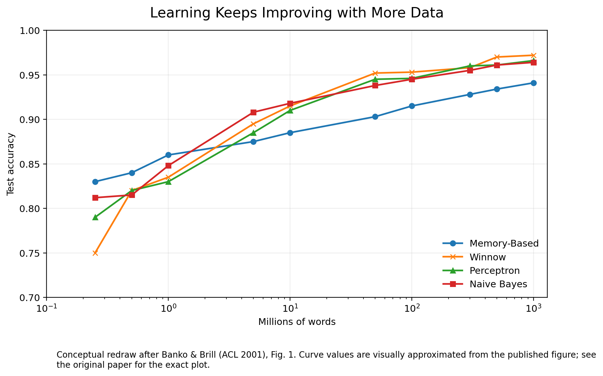
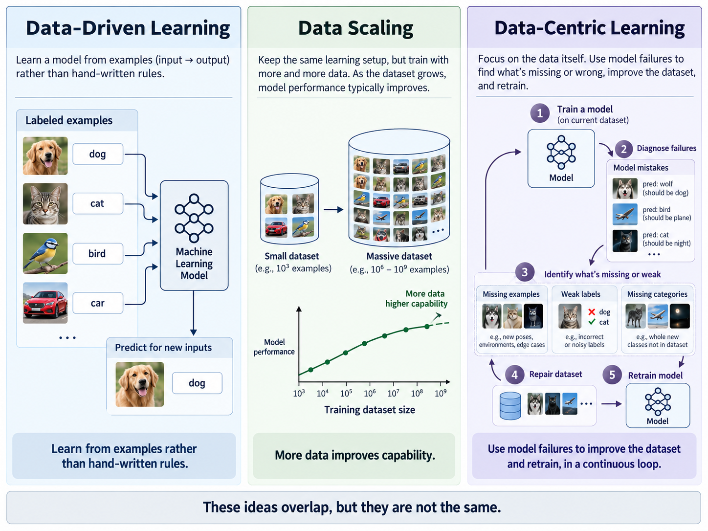

Artificial intelligence has repeatedly changed its answer to a deceptively simple question: Where does intelligence in a learning system come from?
For much of the history of pattern recognition, the answer emphasized algorithms and representations. Researchers designed better features, better classifiers, better probabilistic models, and better optimization procedures. Data were indispensable, of course, but they were often treated as a relatively fixed input to the learning process.
Over time, another idea became increasingly important:
Perhaps progress does not come only from designing a better learning algorithm. Perhaps it comes from obtaining more data, better data, better labels, broader coverage—and eventually from allowing the learning system to identify weaknesses in its own data.
Today we use terms such as data-driven AI and data-centric AI to describe parts of this transition. But those terms compress several historically distinct ideas. Large-scale data are not the same thing as data-driven learning. Data-driven learning is not the same thing as data-centric AI. And building a large labeled dataset is not the same thing as designing a system in which the training data themselves can be diagnosed and improved.
The history is therefore more interesting than a single invention or date.
One particularly revealing place to reconstruct that history is image semantic learning: the effort to teach machines not merely to compare pixels, colors, and textures, but to associate visual information with human concepts such as tiger, forest, building, sunset, or Eiffel Tower.
This article begins an investigation of that lineage.
ImageNet deserves its place in history. But the ideas that made large-scale visual learning possible were developed over decades by researchers working on different pieces of the problem. Before ImageNet, researchers were already asking how to represent texture, color, shape, and local structure; how to bridge the semantic gap; how to infer a human query concept from feedback; how to annotate images automatically; how to organize concepts with lexical ontologies; and how to collect and label visual data at Web scale.
Three contemporaneous surveys are especially useful maps of this pre-ImageNet landscape: Rui, Huang, and Shih-Fu Chang's 1999 survey covered more than one hundred papers in content-based retrieval; Smeulders et al. surveyed roughly two hundred references in 2000 and made the semantic gap a central organizing problem; and Datta et al. surveyed almost three hundred contributions in image retrieval and automatic annotation in 2008. These surveys make clear that ImageNet arrived into an already deep, diverse field rather than an empty one.
1. Visual representation
How should an image be represented so that machines can compare it robustly? Texture statistics, perceptual texture, multiresolution wavelets, color histograms, local invariant features, and image-query systems built the representational substrate.
Haralick et al. (1973); Tamura et al. (1978); Mallat (1989); Swain & Ballard (1991); QBIC (1993/1995); Jacobs et al. (1995); Photobook (1996); Lowe/SIFT (1999/2004).
2. Human semantic learning
How can a machine discover what a person means when low-level features are not the language of the query? Relevance feedback, semantic visual templates, and active learning turned interaction into a way of learning a user's concept.
Rui et al. (1998); Chang, Chen & Sundaram (1998); Tong & Chang/SVMActive (2001).
3. Automatic semantic annotation
How can visual observations be mapped to words and categories at scale? Statistical models, translation models, soft annotation, dynamic ensembles, and context/ontology fusion learned mappings from visual evidence to semantic concepts.
Duygulu et al. (2002); CBSA (2003); Li & Wang/ALIP (2003); CDE (2003/2005); EXTENT (2005).
4. Data infrastructure and scale
How can the visual world itself become reusable learning infrastructure? WordNet, Web image search, collaborative annotation, tens of millions of Web images, distributed annotation, and finally ImageNet made scale and semantic organization first-class research objects.
Miller/WordNet (1995); WebSEEk (1997); LabelMe (2007/2008); 80 Million Tiny Images (2008); Web-Scale Image Annotation (2008); ImageNet (2009).
The point is not to replace one creation myth with another. It is to recover the converging streams—and the people behind them—that gradually connected perception, semantics, interaction, annotation, and scale.
From Pixels to Meaning
Early content-based image retrieval systems exposed a fundamental problem that would remain with AI for decades: machines and humans did not naturally describe images in the same language.
A computer could calculate color histograms, textures, shapes, edges, and regions. A person wanted to ask for “a tiger in the forest” or “a sunset over the ocean.”
This discrepancy became widely known as the semantic gap.
One response was to engineer increasingly sophisticated visual features. Another was more consequential: learn the relationship between perceptual features and semantic concepts from examples.
That change sounds obvious today. It was not obvious when image retrieval was dominated by carefully designed visual representations and similarity metrics.
The representation side itself had a long lineage. Haralick, Shanmugam, and Dinstein formalized statistical texture features in 1973; Tamura, Mori, and Yamawaki explicitly connected computable texture measures to visual perception in 1978; Mallat's 1989 wavelet theory provided a multiresolution language for image structure; Swain and Ballard's 1991 color indexing made color histograms a practical matching representation; and Lowe's 1999/2004 SIFT work established highly distinctive local features robust to scale and rotation. These methods did not solve semantics, but they made images progressively more learnable.

Once semantic mapping becomes a learned function, the training examples become part of the machinery that determines what the system knows. That seemingly modest change creates a path toward data-driven AI.
1. Active Learning: Learning a Human Query Concept Without Words
A separate thread, also in 2001, attacked the semantic gap from a different direction. Instead of asking the user to formulate a semantic query in words, Support Vector Machine Active Learning for Image Retrieval asked the user only for binary judgments: relevant or irrelevant. The system then learned the user's latent query concept from those examples.
The distinction from much traditional relevance feedback of the period is important. Query-point movement, query reweighting, and related similarity-based schemes generally presented images that were already close to the system's current estimate of the query. If the first relevant examples were red flowers, such a system was likely to show more images resembling red flowers. That is useful exploitation, but it can explore the semantic boundary slowly.
SVMActive deliberately queried a different kind of example: an unlabeled image close to the current SVM decision boundary—the image whose semantic membership was most uncertain under the current classifier. The user might therefore be shown a yellow rose, a red tulip, a flower against a forest, or a red object that was not a flower. The system did not literally ask, “Do you mean roses only?” or “Does the background matter?” But the boundary example turned the image itself into an implicit semantic question.
SVMActive changed relevance feedback from “show me more of what I already think you mean” toward “show me the example whose label would most reduce my uncertainty about what you mean.”
Why the kernel matters
The published system represented each image by a 144-dimensional vector of hand-designed perceptual measurements. It then used a radial-basis-function (RBF) kernel. The kernel trick implicitly maps the 144-dimensional descriptor into a much richer reproducing-kernel Hilbert space (RKHS). For the standard Gaussian RBF interpretation, that RKHS is infinite-dimensional; the important historical point here is that classification is performed through a nonlinear kernel representation rather than a simple linear boundary in the original descriptor coordinates. The system never needs to enumerate those coordinates explicitly.
At feedback round t, the kernel SVM learns a maximum-margin separator:
The active query is then the unlabeled image with the smallest absolute decision value:
After the user labels that boundary case, the labeled set changes, the SVM is retrained, support vectors and coefficients may change, and the maximum-margin hyperplane moves. When mapped back into the original 144-dimensional descriptor space, that moving hyperplane corresponds to a potentially complicated nonlinear semantic boundary.
color, texture, shape attributes
into a rich RKHS
in kernel space
the current boundary
→ retrain ft+1
Representation expands
R144 → H∞. Kernelization supplies expressive nonlinear capacity. With a fixed kernel and bandwidth, this representational geometry itself remains fixed during feedback.
Semantic uncertainty contracts
V0 ⊃ V1 ⊃ V2 ⊃ ... Each new relevance label eliminates incompatible hypotheses and can move the selected maximum-margin separator.
This distinction matters. It would be inaccurate to say that active learning itself continually reshapes a fixed Gaussian RKHS. A more precise statement is:
The 2001 paper motivates its uncertainty rule through version-space geometry: each labeled example constrains the set of separators still consistent with the observed judgments, and an informative query should cut away as much of that uncertainty as possible. Its formal version-space lemma is stated for a finite-dimensional feature space; the operational RBF-SVM rule is the practical boundary-distance approximation. Thus, for the infinite-dimensional Gaussian-RBF interpretation, version-space contraction is best read as the geometric motivation for the query rule rather than as a new theorem about the entire infinite-dimensional RKHS.
This should also be distinguished from important earlier semantic-gap work. Rui et al. (1998) used relevance feedback to adapt feature weights to a user's high-level need over a database exceeding 70,000 images, while Chang, Chen, and Sundaram's Semantic Visual Templates (1998) represented personalized concepts with successful exemplar queries. SVMActive's distinctive move was to make uncertainty itself the query policy: instead of primarily presenting top-ranked or neighborhood examples, it selected boundary cases expected to be most informative about the user's latent concept.
Traditional relevance feedback versus kernel-space active learning
| Dimension | Traditional similarity-oriented relevance feedback | SVMActive with an RBF kernel |
|---|---|---|
| Current representation | Typically operates directly on a finite-dimensional visual descriptor and its chosen similarity/distance measure. | Uses the same finite-dimensional descriptor as input, but comparisons relevant to classification are mediated by an implicit nonlinear kernel representation. |
| What is shown next | Often top-ranked, nearest, or neighborhood examples under the current query estimate. | Examples closest to the current decision boundary: those whose relevance is most uncertain. |
| Behavior | Primarily exploitative: refine around what already appears relevant. | More exploratory: probe cases that can discriminate among competing interpretations of the user's concept. |
| Semantic object learned | Query position/weights or neighborhood around current positives. | A nonlinear binary decision function separating relevant from irrelevant. |
| Role of human labels | Improve ranking or adjust similarity around the current result set. | Act as constraints that can change support vectors, coefficients, and the semantic decision boundary. |
| Semantic-gap interpretation | Iteratively improves retrieval using feedback. | Actively learns the user's query concept without requiring the user to name it in words; each selected image acts as an implicit semantic question. |
The scientific combination is therefore more specific than either kernel learning or active learning alone:
Historical and personal note
In 2020, when ACM SIGMM inaugurated its Test-of-Time program, the 2001 SVMActive paper was selected as the retrospective 2001 honorable mention among pre-2008 SIGMM papers that could have been strong Test-of-Time candidates had the award existed in their publication year. For my own academic trajectory at UC Santa Barbara, I regard this line of work as a major part of the research record that supported tenure after three years and promotion to full professor in roughly six years.
2. Learning Semantic Annotation from Examples
Our 2003 CBSA work—Content-Based Soft Annotation for Multimodal Image Retrieval Using Bayes Point Machines—provides one useful historical marker.
The problem was not simply how to retrieve visually similar images. The objective was to start with a relatively small collection of manually labeled examples, learn classifiers from them, and then propagate semantic labels to the larger unlabeled collection.
This is an important transition. Humans no longer need to write down the rule that distinguishes a forest from an animal or a building. They provide examples, and the statistical learner attempts to discover the decision boundary.
The paper tested the approach on 25,000 images across 116 semantic categories, substantial scale for an image-semantic experiment at the time. More revealing for the history of data-driven learning, the experiment explicitly varied the amount of training data.
Using 20%, 30%, and 50% of the images for training produced annotation accuracies of approximately 49%, 56%, and 61%, respectively.
At roughly the same historical moment, results in natural-language processing were making the importance of scale increasingly difficult to ignore. Banko and Brill's 2001 ACL paper showed several learning curves continuing to improve as the corpus grew from millions toward roughly a billion words.
A figure that changed my research direction
For a tenure-track assistant professor trying to make progress by designing better algorithms, this was a sobering figure. All four learning schemes improved as the number of training instances grew, and the apparent winner changed with scale. It suggested that an algorithm celebrated on one dataset size might lose its advantage when the data regime changed. Rather than discouraging me, it pushed me toward a different research question: if language disambiguation keeps improving with orders of magnitude more data, would image semantics behave similarly? That question helped motivate our subsequent large-scale and Web-scale image-annotation program and, later, our efforts to diagnose which data, features, or semantic categories a learner was missing.

These developments deserve to be studied together rather than retrospectively assigning one field a privileged starting point. Something was changing across machine learning: data quantity itself was becoming an experimental variable.
3. But More Data Are Not Necessarily Better Data
Increasing the size of L, the training set, immediately raises a harder question:
Which data are missing?
This leads to a second stage in the lineage.
The CDE program appeared first at ACM Multimedia 2003 in Confidence-Based Dynamic Ensemble for Image Annotation and Semantics Discovery and was developed more fully in the 2005 ACM TOMM paper Semantics and Feature Discovery via Confidence-Based Ensemble. It began with an unusual criticism of conventional classifiers. It argued that learning systems commonly assumed three components to be fixed:
C
Semantic categories.
P
Perceptual features.
L
Training instances.
That formulation is interesting when viewed from 2026. Instead of assuming that an error necessarily means that the classifier needs improvement, the system asks what produced the error.
A low-confidence prediction could indicate an inadequate semantic vocabulary, an inadequate feature representation, or inadequate training data. The remedies correspondingly modify C, P, or L. In particular, when training data are under-representative, the prescribed remedy is to add the problematic instance to the training set.
That distinction deserves attention in histories of data-centric AI.
4. From a Large Dataset to a Mutable Dataset
There is a fundamental conceptual difference between saying:
Train on more data.
and saying:
Use model failures to discover which training data are missing.
The first is primarily a scaling strategy. The second makes the dataset an adaptive component of the learning system.
The CDE work illustrates this with a lighthouse photograph. The system mistakes the image for a wave scene because the existing training set poorly represents lighthouses. The analysis considers whether the appropriate repair is to add examples to an existing semantic category or create a new semantic category, with the ontology helping determine which intervention is appropriate.
In modern language, we might describe aspects of this problem using terms such as dataset coverage, hard examples, underrepresented slices, data acquisition, label refinement, or dataset repair. The terminology was different in 2005.
This is considerably closer to what is now called data-centric AI than simply training an algorithm on a large dataset. The paper itself distinguishes the approach from previous annotation methods that held C, P, and L fixed.
Whether this represents an early instance, a precursor, or part of a broader contemporary movement in data-centric learning is a historical question that requires a much wider literature investigation. That investigation is worth doing.
5. Data Alone Were Not Enough
There was another problem: an image does not exist in isolation.
Consider a photograph containing a tower. Pixels provide one source of evidence. But so might the location where the photograph was taken, the time, camera parameters, information about the photographer, and relationships among semantic concepts.
Our 2005 EXTENT work therefore took a different direction.
EXTENT combined these sources using an influence-diagram framework. The paper describes contextual variables including location, time, and camera parameters; perceptual information from the photograph; and semantic relationships among labels.
Importantly, this was neither purely hand-coded knowledge nor purely statistical learning. The model relied on both prior knowledge and data, with relationships between context/content and semantic labels and their strengths learned from observations.
In the landmark experiment, approximately 14,530 images were assembled from Stanford photographs, additional locally collected images, and 13,500 landmark images downloaded from the Internet. For the three-landmark experiment, location alone yielded about 30% recognition and SIFT visual features about 75%. Combining location and SIFT increased recognition to approximately 95%.
The lesson here was not simply more data. It was that the meaning of an observation depends on multiple sources of evidence and their relationships.
This thread would eventually intersect with ideas now described as multimodal learning, structured knowledge, context-aware AI, causal reasoning, and grounding.
6. Then Came the Era of Dataset Scale
By the late 2000s, several complementary projects had made scale itself part of the visual-learning agenda. WordNet supplied a lexical ontology that could organize concepts; WebSEEk had demonstrated semantic organization of large Web image/video collections; LabelMe turned Web-based human annotation into shared research infrastructure; 80 Million Tiny Images demonstrated the power and messiness of Internet-scale visual collection; and distributed learning systems were beginning to make large probabilistic models practical. These were different answers to a common question: how much of the visual world can we turn into learnable, organized data?
The next historical transition requires careful investigation.
During the 2000s, computer vision researchers increasingly recognized that the diversity of the visual world could not be captured by small, carefully curated datasets. The Web changed what was possible. Images existed in unprecedented quantities. Search engines provided partial semantic organization. Online communities generated tags and metadata. Distributed human labeling became practical. Computational infrastructure made increasingly large learning experiments possible.
Eventually, ImageNet would become the defining symbol of this transition.
Its importance should not be understated. ImageNet did something different from the earlier systems discussed above: it constructed an extraordinarily large, systematically organized labeled visual resource, using WordNet's semantic hierarchy as its organizational foundation.
And once large datasets met sufficiently powerful learning algorithms and computation, the consequences became historic.
The 2012 ImageNet breakthrough of deep convolutional networks did not merely improve image classification. It helped change the dominant methodology of artificial intelligence.
But the familiar shorthand—
—can obscure the longer intellectual lineage. Long before 2012, researchers were already asking:
- Can semantic labels be learned from visual examples?
- How does performance change as training data increase?
- Can labels be propagated automatically?
- How should ambiguous or underrepresented training examples be detected?
- Can a learner identify missing semantic categories?
- Should failures trigger acquisition of new training data?
- How should visual evidence be combined with context and semantic knowledge?
- How can these methods scale to hundreds of semantic concepts and tens of thousands—or eventually millions—of images?
ImageNet provided a particularly successful answer to one critical part of this emerging agenda: scale the labeled visual world dramatically.
It did not begin the entire agenda.
7. “Data-Driven” and “Data-Centric” Should Not Be Synonyms
Historical clarity requires separating at least three ideas.

Data-driven learning
The model's behavior is learned substantially from observations rather than specified entirely through hand-written rules.
Data scaling
Capability improves by substantially increasing the amount and diversity of training data.
Data-centric learning
The composition and quality of the dataset itself become objects of systematic diagnosis and optimization.
Under these definitions, SVMActive belongs to an early model-directed data-acquisition lineage: the learner uses uncertainty to decide which semantic label to acquire next. CBSA belongs naturally in the data-driven annotation lineage. Banko and Brill, large Web corpora, ImageNet, and later foundation-model training make data scaling increasingly visible. The CDE formulation is historically intriguing because it explicitly permits the training set L, feature set P, and semantic space C to change in response to uncertainty and failure.
These traditions overlap. But they are not identical.
8. The Historical Question Is Not “Who Invented Data-Centric AI?”
That question is probably too simplistic. Ideas rarely appear fully formed on one date.
A better set of questions is:
When did researchers begin treating data quantity as a primary determinant of learning performance?
When did image understanding shift from manually engineered semantics toward learning semantic mappings from examples?
When did researchers begin treating the training dataset itself—not merely the algorithm—as something to diagnose and improve?
When did large-scale labeled datasets become infrastructure for general-purpose representation learning?
And how did these previously separate traditions converge into today's data-centric and foundation-model paradigms?
Those questions lead to a lineage rather than a creation myth.
A Preliminary Lineage: People, Papers, and Converging Streams
A single chain is too simple. A more faithful picture is several streams that repeatedly crossed. The milestones below are therefore anchors, not claims of sole origin.
The serious historical task is not to pick one winner from this list. It is to determine which ideas existed when, what problem each solved, which ideas were parallel, and where those streams crossed.
ImageNet deserves its place in history. But it should not erase the history that made ImageNet possible.
Why Revisit This History Now?
There is a certain irony in AI's current trajectory.
For years, enormous progress came from increasing data and computation:
Foundation models pushed this recipe farther than almost anyone imagined possible.
Yet the frontier is again forcing us to ask questions remarkably similar to those raised by early semantic-learning systems.
What is missing from the training data? Which examples should be trusted? When does a model's confidence indicate inadequate knowledge? When is the semantic vocabulary itself wrong? How do we distinguish an inadequate model from inadequate evidence? How should context change interpretation? And when should a machine recognize that the world contains something outside the categories it has learned?
The scale has changed by many orders of magnitude. The underlying questions have not disappeared.
Perhaps the history of data-driven AI is therefore not a simple story in which algorithms gave way to data. It may instead be a recurring interaction among three things:
Understanding that lineage matters not merely for assigning historical credit.
It may help us understand what comes next.
Historical Source Map: Primary Papers and Surveys
The purpose of this list is documentary: to give the pre-ImageNet work names, dates, links, and technical roles. It is not meant to imply a single linear ancestry or exhaustive priority claim.
Surveys that map the field
Rui, Yong; Huang, Thomas S.; Chang, Shih-Fu (1999). “Image Retrieval: Current Techniques, Promising Directions, and Open Issues.” Journal of Visual Communication and Image Representation 10(1):39–62. DOI 10.1006/jvci.1999.0413. A contemporary survey of 100+ papers spanning representation, indexing, and system design.
Smeulders, Arnold W. M., et al. (2000). “Content-Based Image Retrieval at the End of the Early Years.” IEEE TPAMI 22(12):1349–1380. DOI 10.1109/34.895972. Reviews roughly 200 references and centers the roles of semantics, interaction, databases, and the semantic gap.
Datta, Ritendra; Joshi, Dhiraj; Li, Jia; Wang, James Z. (2008). “Image Retrieval: Ideas, Influences, and Trends of the New Age.” ACM Computing Surveys 40(2). DOI 10.1145/1348246.1348248. Surveys almost 300 contributions in image retrieval and automatic annotation.
Visual representation and content-based retrieval
Haralick, Robert M.; Shanmugam, K.; Dinstein, Its'hak (1973). “Textural Features for Image Classification.” IEEE Transactions on Systems, Man, and Cybernetics SMC-3(6):610–621. paper.
Tamura, Hideyuki; Mori, Shunji; Yamawaki, Takashi (1978). “Textural Features Corresponding to Visual Perception.” IEEE Transactions on Systems, Man, and Cybernetics 8(6):460–473. DOI 10.1109/TSMC.1978.4309999.
Mallat, Stéphane (1989). “A Theory for Multiresolution Signal Decomposition: The Wavelet Representation.” IEEE TPAMI 11(7):674–693. DOI 10.1109/34.192463.
Swain, Michael J.; Ballard, Dana H. (1991). “Color Indexing.” International Journal of Computer Vision 7:11–32. DOI 10.1007/BF00130487.
Niblack, Wayne, et al. (1993); Flickner, Myron, et al. (1995). The IBM QBIC program developed image/video querying by color, texture, shape, and visual example. 1993 project paper; 1995 Computer article.
Jacobs, Charles E.; Finkelstein, Adam; Salesin, David H. (1995). “Fast Multiresolution Image Querying.” SIGGRAPH 1995, 277–286. DOI 10.1145/218380.218454. Wavelet signatures enabled interactive search over databases as large as 20,000 images.
Pentland, Alex; Picard, Rosalind W.; Sclaroff, Stan (1996). “Photobook: Content-Based Manipulation of Image Databases.” IJCV. DOI 10.1007/BF00123143.
Smith, John R.; Chang, Shih-Fu (1997). “Visually Searching the Web for Content.” IEEE Multimedia 4(3):12–20. DOI 10.1109/93.621578. An early Web-scale content-search milestone associated with WebSEEk.
Lowe, David G. (1999; 2004). SIFT: “Object Recognition from Local Scale-Invariant Features” and the definitive “Distinctive Image Features from Scale-Invariant Keypoints.” ICCV 1999; IJCV 2004.
Human semantics, relevance feedback, and active learning
Rui, Yong; Huang, Thomas S.; Ortega, Michael; Mehrotra, Sharad (1998). “Relevance Feedback: A Power Tool for Interactive Content-Based Image Retrieval.” IEEE TCSVT 8(5):644–655. DOI 10.1109/76.718510. Explicitly addressed the high-level-concept/low-level-feature gap and demonstrated interactive relevance feedback on more than 70,000 images.
Chang, Shih-Fu; Chen, William; Sundaram, Hari (1998). “Semantic Visual Templates: Linking Visual Features to Semantics.” ICIP 1998, 531–535. DBLP record. Personalized semantic concepts were represented through successful exemplar queries produced by interaction.
Tong, Simon; Chang, Edward Y. (2001). “Support Vector Machine Active Learning for Image Retrieval.” ACM Multimedia 2001, 107–118. ACM Digital Library. The learner queries maximally informative boundary cases to infer the user's query concept from relevant/irrelevant judgments.
Semantic annotation and adaptive learning
Duygulu, Pinar; Barnard, Kobus; de Freitas, João F. G.; Forsyth, David A. (2002). “Object Recognition as Machine Translation: Learning a Lexicon for a Fixed Image Vocabulary.” ECCV 2002, 97–112. DOI 10.1007/3-540-47979-1_7.
Chang, Edward Y.; Goh, Kingshy; Sychay, Gerald; Wu, Gang (2003). “CBSA: Content-Based Soft Annotation for Multimodal Image Retrieval Using Bayes Point Machines.” IEEE TCSVT 13(1):26–38. IEEE Xplore. DOI: 10.1109/TCSVT.2002.808079.
Li, Jia; Wang, James Z. (2003). “Automatic Linguistic Indexing of Pictures by a Statistical Modeling Approach.” IEEE TPAMI 25(9):1075–1088. DOI 10.1109/TPAMI.2003.1227984.
Li, Beitao; Goh, Kingshy; Chang, Edward Y. (2003). “Confidence-Based Dynamic Ensemble for Image Annotation and Semantics Discovery.” ACM Multimedia 2003, 195–206. DOI 10.1145/957013.957051.
Goh, Kingshy; Li, Beitao; Chang, Edward Y. (2005). “Semantics and Feature Discovery via Confidence-Based Ensemble.” ACM TOMM 1(2):168–189. DOI 10.1145/1062253.1062257.
Chang, Edward Y. (2005). “EXTENT: Fusing Context, Content, and Semantic Ontology for Photo Annotation.” CVDB 2005, 5–11. ACM Digital Library. DOI: 10.1145/1160939.1160945.
Data infrastructure, Web scale, and ImageNet
Miller, George A. (1995). “WordNet: A Lexical Database for English.” Communications of the ACM 38(11):39–41. DOI 10.1145/219717.219748. WordNet later supplied the semantic hierarchy used to organize ImageNet.
Russell, Bryan C.; Torralba, Antonio; Murphy, Kevin P.; Freeman, William T. (2008; online 2007). “LabelMe: A Database and Web-Based Tool for Image Annotation.” IJCV 77:157–173. DOI 10.1007/s11263-007-0090-8.
Torralba, Antonio; Fergus, Rob; Freeman, William T. (2008). “80 Million Tiny Images: A Large Data Set for Nonparametric Object and Scene Recognition.” IEEE TPAMI. DOI 10.1109/TPAMI.2008.128. Collected 79,302,017 Web images associated with 75,062 WordNet nouns.
Liu, Jiakai; Hu, Rong; Wang, Meihong; Wang, Yi; Chang, Edward Y. (2008). “Web-Scale Image Annotation.” PCM 2008, LNCS 5353, 663–674. Springer / DOI. Distributed LDA parameter computation with MapReduce for large-scale image tagging.
Deng, Jia; Dong, Wei; Socher, Richard; Li, Li-Jia; Li, Kai; Fei-Fei, Li (2009). “ImageNet: A Large-Scale Hierarchical Image Database.” CVPR 2009, 248–255. DOI 10.1109/CVPR.2009.5206848.
Scaling influence and synthesis
Banko, Michele; Brill, Eric (2001). “Scaling to Very Very Large Corpora for Natural Language Disambiguation.” ACL 2001, 26–33. ACL Anthology. DOI: 10.3115/1073012.1073017.
Chang, Edward Y. (2011). Foundations of Large-Scale Multimedia Information Management and Retrieval: Mathematics of Perception. Springer. Springer. DOI: 10.1007/978-3-642-20429-6.
Author's Note: An Investigation, Not a Priority Claim
This essay is a historical investigation, not a claim that any one project invented data-centric AI. Its purpose is to restore a richer technical record: who worked on which problem, when, with what evidence, and how previously separate streams later converged.
The examples from SVMActive (2001), CBSA (2003), CDE (2003/2005), EXTENT (2005), and Web-Scale Image Annotation (2008) are included because their original papers make their technical claims directly available for examination. A fuller account should examine the contemporary and preceding literature—including statistical learning, NLP scaling, active and semi-supervised learning, relevance feedback, multimedia retrieval, Web-scale image learning, shared datasets, WordNet-based visual organization, ImageNet, crowdsourced annotation, and the later emergence of the term data-centric AI—before drawing conclusions about lineage or precedence.
The next step is documentary: continue reconstructing the record from primary sources, especially 1990–2012, and expand each milestone into a concise entry containing the people, paper, problem, technical contribution, limitations, and later inheritance. The objective is closer to a technical historical atlas than a priority argument.